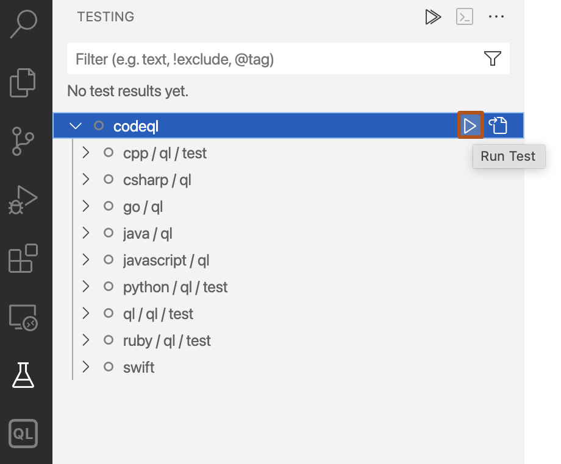
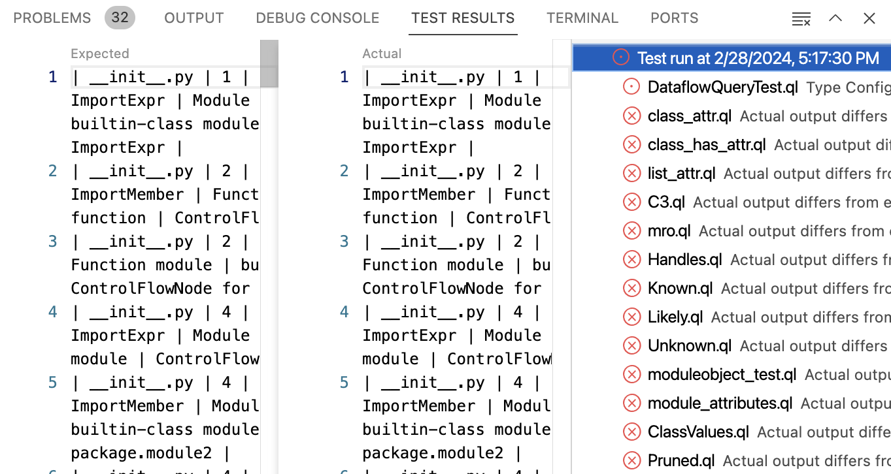

You can run unit tests for CodeQL queries using the Visual Studio Code extension.
To ensure that your CodeQL queries produce the expected results, you can run tests that compare the expected query results with the actual results.
The CodeQL extension automatically registers itself with the "Testing" view. This view displays all tests found in your current workspace and provides a UI for exploring and running tests in your workspace.
For more information about creating CodeQL tests, see Testing custom queries.
To see more detailed output from running unit tests, open the CodeQL Tests log. For information, see Accessing logs for CodeQL in Visual Studio Code.
In Visual Studio Code, open the "Testing" view in the sidebar.
To run a specific test, hover over the file or folder name and click the play button. To run all tests in your workspace, click the play button at the top of the view. If a test takes too long to run, you can click the stop button at the top of the view to cancel the test.

The icons show whether a test passed or failed. If it failed, click the test in the "Test Results" to display the differences between the expected output and the actual output.

Compare the results. If you want to update the test with the actual output, right-click the test in the "Testing" view and click Accept Test Output.
Query performance is important when you want to run a query on large databases, or as part of your continuous integration system.
If you want to examine query performance, enable the "Running Queries: Debug" setting to include timing and tuple counts. This will then be shown in the logs in the CodeQL "Query Server" tab of the "Output" view. The tuple count is useful because it indicates the size of the predicates computed by the query. For more information about changing settings, see Customizing settings.
When a query is evaluated, the query server caches the predicates that it calculates. So when you want to compare the performance of two evaluations, you should run CodeQL: Clear Cache to clear the query server's cache before each run. This ensures that you're comparing equivalent data.
For more information about monitoring the performance of your CodeQL queries, see Troubleshooting query performance and Evaluation of QL programs in the CodeQL documentation.
When you are sure that your query finds the results you want to identify, you can use variant analysis to run it at scale. For information on running analysis at scale across many CodeQLdatabases, see Running CodeQL queries at scale with multi-repository variant analysis.